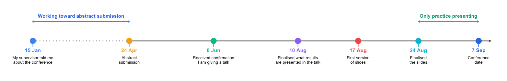

Preparation for a Conference
How I prepared for a conference and what I learned from it
First of all, I would like to give a shout-out to my supervisor, Zam, for being incredibly supportive and encouraging. He spent a lot of time helping me prepare for the talk, and through him, I have also had the opportunity to meet many intelligent and interesting people. I am very grateful for that.
I recently gave my first conference talk during my PhD, and to my delight (and according to my colleagues who attended the conference), it went really well. I was very happy about that.
Afterwards, I was invited to share my conference experience with my colleagues, so I thought I would write it down here as well. I am still learning, and this was only my first conference talk as a PhD student, but these are a few things that worked for me. I hope they might be useful to someone else preparing for their first conference.
The most important thing for me: start early
The conference took place on 7th September, but my supervisor first told me about it in January.
It is not that we spent all that time thinking about the conference. Rather, attending and presenting at the conference was always somewhere on our list. One of our goals for the year was to have something ready to present there.
The abstract submission deadline 24th April, quite early I think; because we had already been thinking about the conference for several months, we were able to plan our work and submit the abstract on time.
I think this made a big difference.
Starting early does not mean that everything needs to be ready early. It means knowing where you want to go and giving yourself enough time to get there. You have more time to develop your work, think about what you want to present, get feedback, and improve it.

Get your story straight
One thing I learned from preparing this talk is that having good results is not enough. You need to know what story you want to tell.
At the beginning, I had a lot of results and, naturally, I wanted to show everything. But a conference talk is short, and the audience does not know your project as well as you do. If you try to show too much, it is very easy to lose them.
My supervisor spent a lot of time discussing the story with me: What is the question? Why is it important? What do we know already? What did we find? And, most importantly, what do we want the audience to remember after the talk?
Once the story became clear, making the slides became much easier. Every slide needed to have a purpose and contribute to that story. Some results that I really liked had to be removed simply because they did not help move the story forward.
I think this is something I will carry into future presentations: don’t start by asking, “What results should I show?” Start by asking, “What story do I want to tell?”
Don’t work too hard at the last minute
This might sound strange because, in the few weeks before a conference, there is always something more you can do. You can generate more data, make new figures, run more analyses, or even develop a new pipeline.
But at some point, more results do not necessarily make a better talk. A presentation full of numbers is not necessarily a strong presentation. And more importantly, how confident are you in results that you generated in a hurry just before the conference?
Since I started preparing early, I had time to go through several versions of the presentation, discuss them with my supervisor and colleagues, and practise many times with what I already had. In the last few days, the goal was no longer to completely change the talk or add more results. It was to become comfortable and confident with the story I was going to tell.
I think this is important because going into a conference exhausted and stressed does not help. You need energy not only for your presentation, but also for listening to other talks, meeting people, having conversations, and enjoying the conference.
So my lesson is: do the hard work early, be confident in the results you present, and leave the last few days for polishing, practising, and resting.
Practice how to introduce yourself and your work
I prepared a lot for my talk, but I realised that there was another kind of preparation that was just as useful: knowing how to introduce myself and my research.
At a conference, people will ask you many versions of the same questions:
What do you work on?
What is your PhD about?
What did you present today?
These conversations may happen during a coffee break, at lunch, after your talk, or while you are standing next to a poster. You often have only a minute or two to explain what you do.
It sounds easy, but I don’t think it is. Especially for those of us who speak English as a second language, it can be difficult to explain our work clearly and concisely on the spot. I found that practising these conversations beforehand made them much easier.
Explaining several years of research in just a few sentences, especially to someone who works in a different field, takes practice. I found it useful to think beforehand about a simple way to describe my PhD: what problem am I interested in, what am I doing to study it, and why does it matter?
You don’t need to memorise a script. In fact, you will probably explain your work slightly differently depending on who you are talking to. But having a clear introduction in mind makes it much easier to start a conversation and gives you more confidence when meeting new people.
And sometimes, that one-minute introduction can lead to a much longer and more interesting conversation.
Have in mind people you would to meet
There are many people at a conference, and sometimes it can be quite difficult to approach someone you really want to talk to, especially senior researchers.
Before the conference, it can be helpful to make a short list of people you would like to meet. Think about why you want to talk to them: Is there something you want to ask about their research? Do you want their advice? Is there a potential opportunity for collaboration? Spend a little time reading their profiles and recent work beforehand. You don’t need to know everything they have published, but having a basic understanding of their research makes it much easier to start a meaningful conversation.
It is also useful to prepare a few questions for the talks you plan to attend. Asking a question after a talk can be a natural way to introduce yourself and start a conversation with the speaker afterwards. Your supervisors can also be very helpful. Ask them who they think you should meet and, if possible, ask them to introduce you. A simple introduction from someone you already know can make approaching a senior researcher much easier.
However, don’t focus too much on meeting specific people. The person you want to meet may be busy, already talking to someone else, or simply not have much time. That’s completely normal. Some of the most interesting conversations at conferences happen unexpectedly — while having coffee, waiting for the next session, sitting next to someone at lunch, or talking to someone whose research you knew nothing about beforehand.
So have a plan, but stay flexible. Know who you would like to meet, but be open to who you might meet. A conference is not only about networking with the “right” people; it is also an opportunity to discover new ideas, hear different perspectives, and learn from people you did not expect to meet.
Enjoy the conference
Finally, enjoy it.
It is very easy to become so focused on your own presentation that the conference starts to feel like an exam. Before the talk, you are nervous about presenting. After the talk, you start thinking about what you could have said better.
But the presentation is only a small part of the conference.
Once my talk was finished, I could relax much more. I listened to other people’s work, asked questions, met researchers I had previously only known through their papers, talked to people working on completely different problems, and had many interesting conversations.
I think conferences are one of the few opportunities in research where so many people interested in similar questions are in the same place at the same time. It would be a shame to spend the whole conference worrying about your slides.
Of course, presenting your work is important. But so is meeting people, hearing new ideas, discovering work you did not know about, and simply enjoying being part of the scientific community.
Looking back, I am glad that my first PhD conference talk went well. But some of my favourite memories from the conference happened outside the lecture room.
So prepare well, tell your story, practise your talk—and when you get there, remember to enjoy the conference.